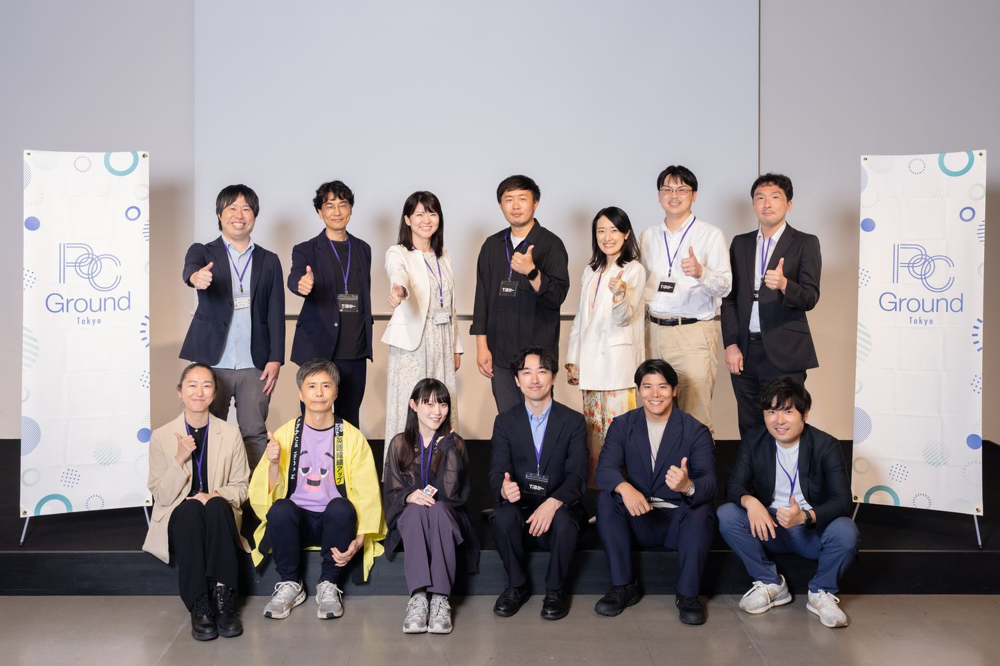

01 — 背景
世代を問わない「移動の不便」を解く。
実証地は、大田区の交通政策計画でも示される「交通不便地帯」。路線バスから外れ、徒歩での生活が難しい地域です。一方で高齢化は進み、既存のシェアモビリティはスマホ前提・若者向け。そこで、高齢者を含む多世代が使える居住地型のシェアモビリティが成立するかを検証しました。
02 — 取組内容
「使う人を選ばない」設計に。
WHILL（4輪小型モビリティ）3台と子ども乗せ電動アシスト自転車1台を、都営住宅前に常設。免許・スマホ・年齢を問わず使えるよう、4つの設計を徹底しました。
- 01免許不要・安全設計WHILLは時速6km以下で免許不要。高齢者にも安心の安定走行。
- 02現金OK（スマホ不要）オンライン・現金・定期券の3方式。Limot×京急で全国初のカプセルトイ決済を実装。
- 03多世代対応・拠点設置型子どもから高齢者まで。生活動線上の都営住宅前に常設。
- 04地域連携京急プレミアポイント連携、信用組合・町会での周知で日常に溶け込ませた。
03 — 成果
4項目中、3項目でKPIを達成。
達成① 満足度
4.5/5.0
KPI 4.0以上
自転車利用者は満点5.0
自転車利用者は満点5.0
未達② 利用回数
35回/月
KPI 50回/月
実証後も継続増加中
実証後も継続増加中
達成③ 自力操作
≒100%
KPI 80%以上
予約・決済すべて自力
予約・決済すべて自力
達成④ 外出促進
5箇所+
主要動線を
GPSで可視化
GPSで可視化
「歩くには遠い距離を、もう一歩先まで行ってもらえる」——資料の中だけでは得られない、現場でしか掴めない手応えがありました。

04 — 利用者の声
世代を超えて、確かな手応え。
30代女性 ／ 自転車
「保育園送迎にも使える」「公園まで気軽に行けるように」
50代男性 ／ WHILL
「免許なしで乗れて助かる」「足の負担なく買い物に」
40代女性 ／ 自転車
「子どもの送迎に便利」「車を出さなくて済む」
05 — 今後
東京モデルを、全国の交通空白地帯へ。
〜2026年度に東京モデルを完成させ大田区で実装フェーズへ。2027年度に京急沿線・他自治体へ面展開、2028年以降は全国の移動困難地域へ——UR・JKK等への外販も視野に、社会実装を加速させます。